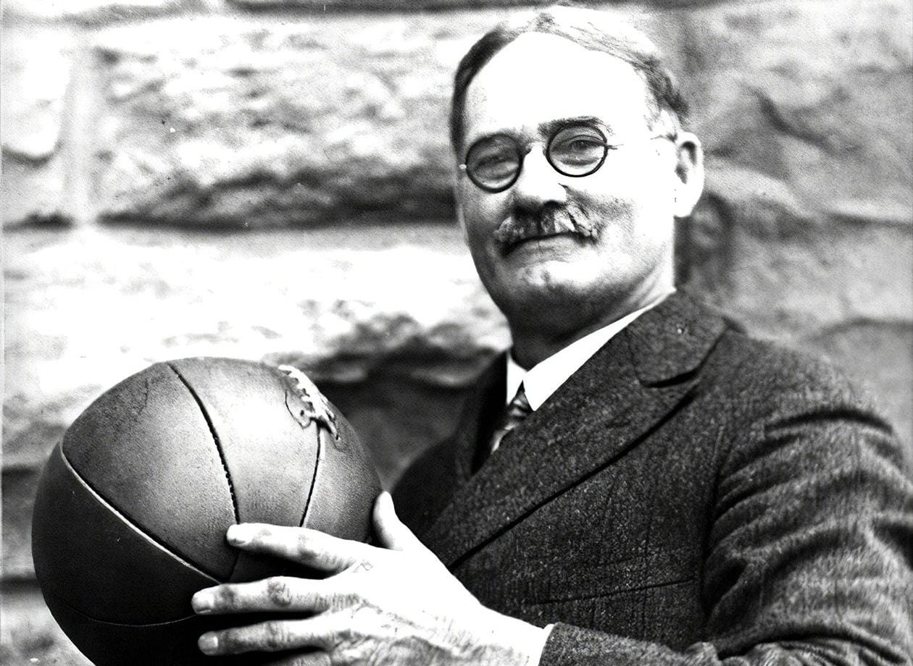
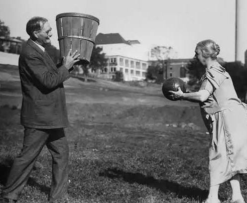
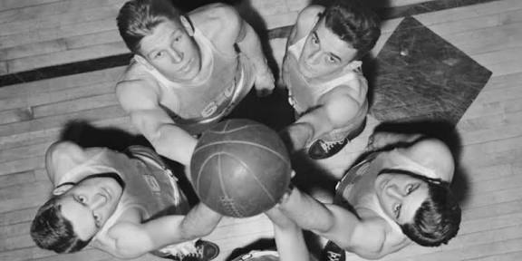

El baloncesto fue inventado en 1891 por James Naismith, profesor de educación física canadiense. Su objetivo era crear un juego de interior que mantuviera activos a sus alumnos durante el invierno. El primer partido se jugó con una pelota de fútbol y dos cestas de duraznos colgadas en extremos opuestos de un gimnasio.
Desde entonces, el básquet creció rápidamente. En 1936 se jugó el primer torneo olímpico, y la NBA se fundó en 1946 en Estados Unidos. A lo largo de los años, el deporte se expandió por todo el mundo, especialmente en Europa y América Latina, ganando popularidad masiva gracias a figuras como Michael Jordan, Magic Johnson y Kobe Bryant.


Hoy, el básquet es un deporte global. Ligas profesionales y universitarias forman jugadores de élite, y torneos internacionales como la EuroLeague y la Copa del Mundo atraen millones de aficionados. Su influencia va más allá de la cancha, inspirando cultura, moda y entretenimiento.